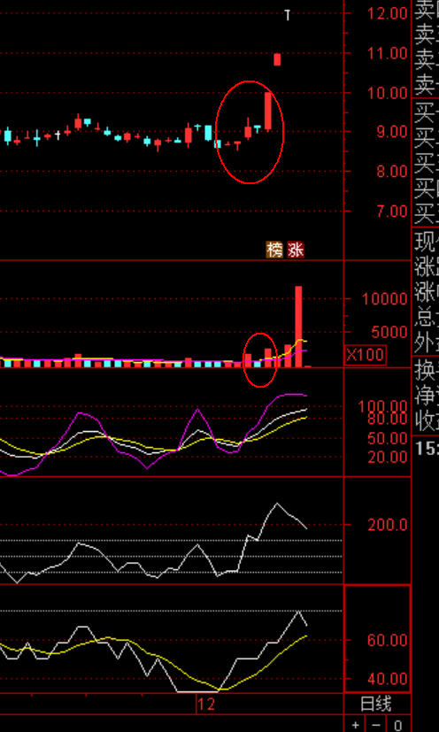
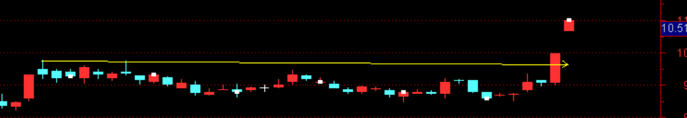
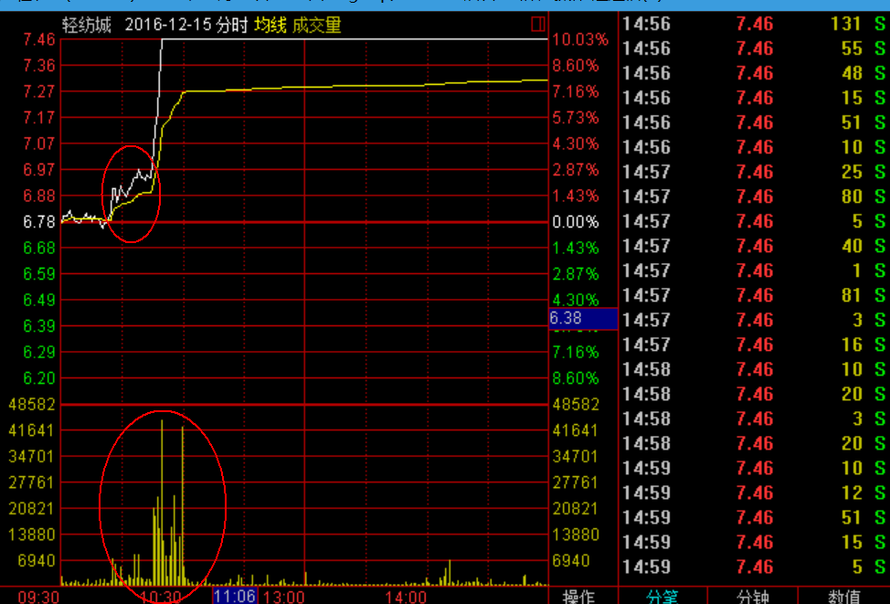

Table of Contents
1 大盘研判
1.1 年底高位股票需要警惕
公私募基金需要清盘，场外因素，高位的股票会被砸下来
1.2 上证指数
- 下周可能在 3100 点震荡
- 判断，周线可能收一个长下影
- 创业板不仅不会涨，还随时有暴跌风险
- 中小板也有暴跌风险，看周线，KDJ
- 上证低估值可以碰 –> 珠江实业，现在不适合买，未来是一个重点
2 穿越牛熊
2.1 持续高增模型 – 牛熊穿越利器
- 业绩本身的基数要好
- 业绩持续增长的幅度要大
- 持续增长最好三年以上
- 持续增长要来自于主营业务
- 持续增长股价最好处于阶段性底部
- 持续增长在同板块是最大
- 持续增长相比别的版块幅度也基本最大
- 该股最好属于热点版块
- 接入时机，大盘刚好熊转牛或者震荡市
2.2 抄底
- 个股在主力的成本区
- 上升趋势没有被破坏，短期趋势 5/10 是下降的
- 5/10 下降过程中缩量
- 豫能控股 –> 中线股
- 珠江实业 –> 现在不合适买，5/10 均线金叉可以买，MACD 零轴金叉
- 注意 K 线形态是否收入均线
- 中成股份 –> 还会回踩
- 一根大阳线上去，之后几个阴线砸下来 –> 主力想洗盘 注意，阴线缩量，量越小越好，举例：金牛化工 
- 另外一个买点，K 线是否吃掉前期高点，攻击波吃掉前期高点，突破高点后需要注意看有没有放量，如果放量的话，基本就是高点 
- 敦煌种业 –> 月线大周期金叉 –> 下周如果低开，果断入，低开的概率小
- 轻纺城 –> 吞掉高点，冲击波 
- 博闻科技 –> 下周下调可入
- 宁波热电 –> 长期可做，短期趋势还会震荡
- 月线当日线看，看长期趋势
- 博迈科，顾家家居，次新股，主力吸筹
2.3 回头波上升趋势洗盘
前一个交易日分时图先往上拉，然后往下砸，第二个交易日一般都是往下跌